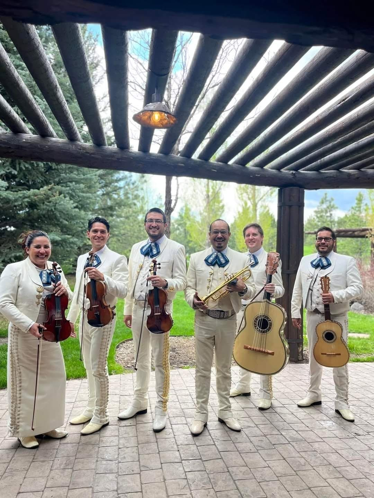

El Son de la Negra to Amor Eterno
A mariachi band for birthdays, quinceañeras, anniversaries and weddings.
You know the part of a ranchera where the trumpets come in and the whole family starts singing. This is the band to book when you want that at your own celebration. It’s a full mariachi in matching charro suits, with violins, a trumpet, a vihuela (a small guitar with a rounded back), a guitar and a guitarrón (a big bass guitar), and several of the musicians sing.

Trusted and booked by
Song list
What does a mariachi band play?
This mariachi plays rancheras, boleros, huapangos, polkas and cumbias, plus music from all over Latin America. Their song list includes La Barca, Contigo Aprendí, Regálame Esta Noche, Que Sepan Todos and Las Llaves de Mi Alma.
The band can play gentle boleros through dinner and pick up the pace with cumbias when it’s time to dance. The musicians are happy to work with Spanish and English speaking families, so you can plan the music in whichever language is easier for you.
Mariachi band photos



Occasions
Perfect booking for
- Birthdays
- A mariachi serenade is a classic birthday surprise, whether it’s at home, at a restaurant or at a big milestone party.
- Quinceañeras
- A full mariachi in charro suits makes a quinceañera feel even more special, and we can plan the songs with your family ahead of time.
- Anniversaries
- Mariachi is a lovely way to celebrate a 25th or 50th anniversary with the whole family, and the band can play the couple’s favorite boleros.
- Weddings
- A mariachi brings a lot of joy to a wedding cocktail hour or reception, whether it’s a big family wedding or a small one.
- Funerals and memorials
- The band can play the songs your family asks for at a funeral, a memorial or a celebration of life.
Planning something for work? A mariachi is a fun way to celebrate Cinco de Mayo or Hispanic Heritage Month at a company event.
What clients say
“Outstanding job! We hired them for my mother’s 60th birthday party she was beyond happy with the performance they did. All the guest were impressed. They have beautiful voices and can really give a great performance. Highly recommend these guys.”
Venues
We’d pick Mariachi Band for live music at these venues.

Mariachi band questions
Looking for something else? Our full list of questions covers things like how far ahead to book and what happens if a musician can’t make the date.
How many musicians are in a mariachi band?
How much does it cost to hire a mariachi band in Denver?
Can we book a mariachi for a surprise serenade?
Can the band play outdoors?
Can we request songs?
Planning a serenade, a quinceañera or a family party? Send us your date and we’ll get back to you with availability and costs.
You’ll have a single point of contact for the whole booking, and we can help with the rest of the music for your event, too.
Want photos or video of your event? Add them to your booking.